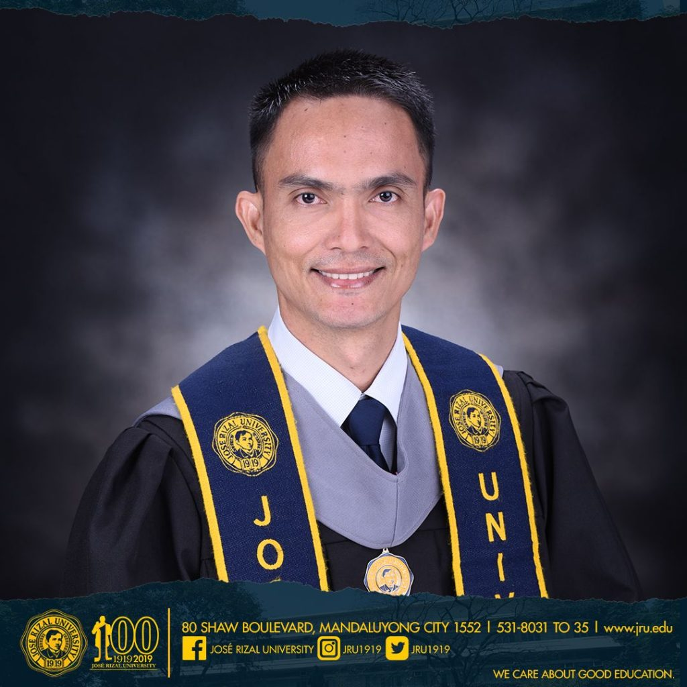

Se você me perguntar se acredito em destino. Vou dizer que sim, mas para mim, destino tem um significado diferente. Você não escolhe onde e em que contexto vai nascer, mas a partir dai já é possível começar a prever o seu destino. Entretanto, o destino não é uma previsão qualquer, ele é uma previsão tão forte (Ou pelo menos nos fazem acreditar que é), que alguns acreditam que seja definitivo ou imutável. Então, quando isso acontece, o destino se transforma em realidade.
NO ENTANTO, algumas pessoas colocam o destino no bolso e se fazem dona do seu próprio destino. Você é uma delas?
“Todo dia que carrego um jornal, penso em como é difícil. Eu me pergunto por que alguém que quer estudar ainda é um ninguém.”
Essas foram as palavras que Romelito Manuel proferiu enquanto chorava, lembrando sua jornada muito longa e inspiradora em direção à sua graduação na Universidade José Rizal, nas Filipinas.
Romelito ou "Kuya Manuel" para seus colegas de classe e seus colegas assistentes estudantis, foi para José Rizal como parte da equipe de Serviços Gerais em 2008. Ele estava limpando o saguão e os escritórios no térreo desde então. Toda vez que ele varria o terreno da escola, via frequentemente estudantes passeando no pátio, até um dia, ele começou a perguntar aos alunos como é entrar em uma sala de aula da faculdade e se os professores eram bons. Além disso, ele até perguntou em duas escolas próximas. Na época, ele achava que talvez não pudesse financiar seus próprios estudos em JRU. Por isso, ele se matriculou em uma universidade diferente.
Devido à dedicação de Kuya Manuel, ele se matriculou em um curso de dois anos em Manutenção de Hardware de Computador enquanto ainda trabalhava na JRU. Foi em 2011, quando ele terminou seu curso de diploma e mais dois anos se passaram quando surgiu uma oportunidade desafiadora para continuar seus estudos.
Devido à dedicação de Kuya Manuel, ele se matriculou em um curso de dois anos em Manutenção de Hardware de Computador enquanto ainda trabalhava na JRU. Foi em 2011, quando ele terminou seu curso de diploma e mais dois anos se passaram quando surgiu uma oportunidade desafiadora para continuar seus estudos.
Ele estava casualmente fazendo suas tarefas habituais de limpar os corredores do Edifício H quando percebeu que havia um monte de estudantes de Engenharia da Computação que não conseguiram fazer seu projeto de cabeamento funcionar até o momento em que ele ofereceu sua ajuda e com a admiração dos alunos, Romelito foi capaz de consertar o projeto deles. Por isso, outros estudantes também pediram sua ajuda.
“Surpreenda-os! A propósito, os desafios nos fazem crescer."
Em 2013, ele finalmente decidiu se inscrever na universidade em que trabalhava, limpando o chão, em Animação e Desenvolvimento de Jogos. Com sua decisão de estudar, ele teve que economizar muito em suas despesas pessoais e gorjetas.
“Economizar era a palavra. Com o meu salário pequeno, eu apenas conseguia pagar a mensalidade e o básico para viver.”, disse Romelito, lembrando-se de como era difícil para poder comer, estudar e viver ao mesmo tempo.
Depois de sete anos sendo parte da equipe de serviço geral, ele finalmente deixou o emprego por causa de horários conflitantes e a crescente necessidade de mais renda. Durante o tempo em que ele não estava na JRU, ele costumava procurar empregos secundários. Inesperadamente, Manuel recebeu uma ligação do Gabinete de Orientação e Testes que, na época, procurava assistentes estudantis na Biblioteca.
Por meio do qual ele conseguiu voltar à escola, “ Eu ainda tenho sorte. Embora eu sempre quis desistir, o Senhor ainda fez um caminho para eu continuar trabalhando. Além dele, muitas pessoas também me inspiram.”
Manuel também compartilhou que toda vez que andava pelo campus entregando jornais para os escritórios, ele carregava consigo uma quarta folha de papel amarelo com seu currículo resumido. Além disso, durante seu tempo livre na Biblioteca, ele estava lendo livros e palestras apenas para acompanhar a aula. A quantidade de esforço, dedicação e paciência que ele derramou por sua jornada insuperável inspirou muitas pessoas que o conhecem.
Em 8 de abril de 2019, Romelito Manuel finalmente marchou em sua própria graduação e recebeu seu próprio diploma. Ainda chorando em lágrimas, ele compartilhou, todos os dias, olha para o pedaço de papel emoldurado, ainda incrédulo, de que foi capaz de passar pelas dificuldades para alcançar seu objetivo: se formar.
Por fim, Romelito Manuel deu um conselho simples para os alunos que estão passando por dificuldades nos estudos: “não importa quão difícil, não importa quão doloroso, você apenas continua lutando. E no final, você colherá a graça que plantou.”
Hoje, Romelito recebeu 5 ligações de empresas e ainda decide qual delas seguir.
Quer saber como começar a mudar o seu destino e ter um futuro na área de T.I. Clique aqui para ler nosso e-book sobre desenvolvimento de carreira na tecnologia.